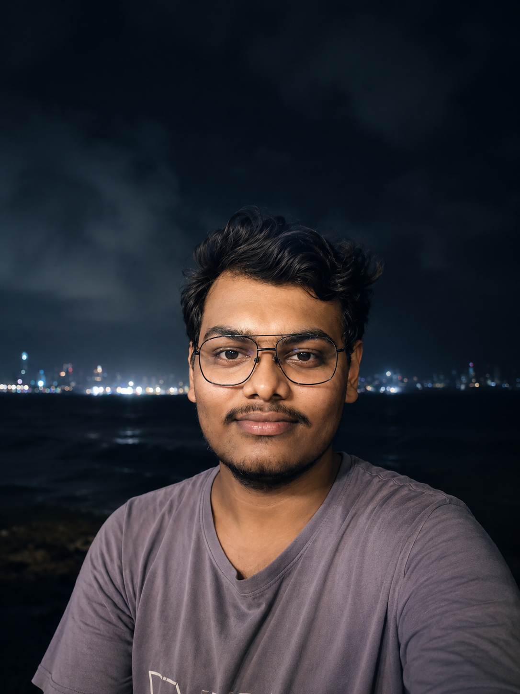

Sujoy Karmakar
Astronomy & Astrophysics • Instrumentation • Computational Research
I am a Research Scholar in Astronomy and Astrophysics at
TIFR Mumbai with interests spanning observational astronomy,
astronomical instrumentation, spectroscopy, and computational
astrophysics.
My work combines scientific programming, observational data analysis,
and independent instrumentation projects focused on optical
spectroscopy and astronomical imaging.
I am particularly interested in building low-cost scientific
instrumentation, numerical simulations, and exploring observational
techniques across different wavelength regimes including radio
astronomy and interferometric methods.
Beyond formal academic work, I actively pursue independent scientific
explorations involving astrophysical simulations, data-driven modeling,
and experimental visualization systems.
Education
Integrated PhD (M.Sc + PhD) in Astronomy & Astrophysics
Tata Institute of Fundamental Research, Mumbai
B.Sc (Hons.) in Physics — CGPA: 9.49
Tata Institute of Fundamental Research, Mumbai
B.Sc (Hons.) in Physics — CGPA: 9.49
Research Interests
Observational Astronomy
Spectroscopy
Astronomical Instrumentation
Scientific Computing
Data Analysis
Astrophysical Simulations
Spectroscopy
Astronomical Instrumentation
Scientific Computing
Data Analysis
Astrophysical Simulations
Technical Skills
Python • C • GNU Octave
NumPy • SciPy • Matplotlib
Astropy • FITS Processing
Git • Linux • LaTeX
NumPy • SciPy • Matplotlib
Astropy • FITS Processing
Git • Linux • LaTeX
Projects
Surface Brightness Fluctuation Pipeline
Exoplanet Transit Modeling
Stellar Spectrometer Construction
Numerical Astrophysics Simulations
Exoplanet Transit Modeling
Stellar Spectrometer Construction
Numerical Astrophysics Simulations
Achievements
TIFR GS 2024 — Top 0.25% nationally
AIR 52 — IIT JAM Physics
AIR 135 — JEST Physics
Cracked CUET PG 2024
AIR 52 — IIT JAM Physics
AIR 135 — JEST Physics
Cracked CUET PG 2024
Contact
Professional:
sujoy.karmakar@tifr.res.in
Personal:
sujoy999karmakar@gmail.com
sujoy.karmakar@tifr.res.in
Personal:
sujoy999karmakar@gmail.com